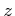
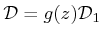

The split-step Fourier Method (SSFM) is an efficient algorithm for the numerical solution of the NLSE. It is a special application of the splitting method for solving a PDE. Generally speaking, the method is useful to face out the problem [43]:
where is a differential operator that can be written in
the form
, being and
differential operators as well, such that:
are two differential equations easy to solve. This is the case of the NLSE where closed form solutions exist with only dispersion or with only nonlinearity. If does not depends on  and is continuous with continuous derivatives, from the Peano-Picard-Liouville theorem the following succession in uniformly converges to the exact solution of (3.19):
where the exponential makes sense only after writing it into a series form:
and
means the application of times.
If is non-constant the solution is more complicated. However,
as we will see next, such operator is usually evaluated over small
steps where it can be assumed almost constant. A possible generalization
of the problem is with
 with  a
continuous function with continuous derivative and
a constant differential operator, yielding
instead of
a
continuous function with continuous derivative and
a constant differential operator, yielding
instead of
 .
.
Usually
 is unknown or very tedious to
evaluate, while it is easy to evaluate
and
. Using (3.20) it
is simple to show that:
is unknown or very tedious to
evaluate, while it is easy to evaluate
and
. Using (3.20) it
is simple to show that:
where indicates a term that is bounded by a constant times . Such term is zero only when the operators and commute, i.e. . Unfortunately this is not the case of the NLSE, hence applying separately the two operators leaves an error that decreases quadratically by decreasing . The is usually called local truncation error. The SSFM consists therefore in subdividing the fiber in small steps and by applying in each step the two operators separately (splitting). Summarizing, if with and being the fiber length, the algorithm is the following:
If the steps are sufficiently small, the local truncation error is ``small'' as well and hopefully is very close to the exact solution.
The local truncation error can be reduced to
by using the two alternative splitting:
The verify can be done by substituting the exponentials with their series expansion up to in (3.22).
Such idea, called the symmetric split-step, resemble the trapezoidal
rule for numerically evaluate integrals [44,22].
Note that in principle the symmetric split-step requires three exponential
evaluations instead of two of the standard split-step. However, when
many steps are applied successively and the step sizes are known a
priori, adjacent operators can be combined into a single operator,
yielding:
For the NLSE, the SSFM can be applied to the form (3.8), while the electric field of (3.1) can be recovered by applying the step-attenuation at the end of each step. The operator is therefore a constant linear operator:
while applied between coordinate and is generalized in with a -independent nonlinear operator and
The linear operator is efficiently evaluated in the Fourier domain while the nonlinear operator in the time domain. Such approach calls for the FFT and IFFT algorithm for switching between the two domains efficiently.
The choice of the SSFM step size is an hard task for which is difficult to give an universal answer, suitable for any optical system. The most accurate approach for choosing the SSFM step size is to run many simulations for decreasing step sizes until some convergence is observed. The convergence criterion is based on a distance measurement applied to some parameter, like the electric field, the sensitivity penalty, etc.
In Optilux the step can be chosen in different ways. These calls are active only in the nonlinear regime where the SSFM is an approximate algorithm. In cases where the exact solution is known, Optilux ignores the step method and evaluates the solution in a single step (e.g. with only GVD).
Assuming that fiber is called as fiber(x,flag) we have the following options for the step.
Simply call fiber with x.dzmax=C and x.dphimax=Inf. The step is fixed and equal to C [m]. This method uses a standard-SSFM.
The step is adaptively chosen so as to have a maximum nonlinear phase rotation (3.18) over the step equal to x.dphimax [rad]. If also x.dzmax exists and satisfies x.dzmax<x.length, the step is chosen in the same way, but cannot be larger than x.dzmax. This method allows short steps in regions of high power (usually at the beginning of the fiber) and large steps in regions of low power (usually at the end of the fiber). With a unique field the nonlinear phase rotation is the one of SPM; with separate fields it also accounts for XPM. See Section 3.3.1 for more details. The method of constant nonlinear phase rotation per step uses a standard SSFM. See [45,46] for more details about the method.
|
Note 1: The adaptive step needs to keep memory of three electric
fields: , and the electric field at the beginning
of the step in . Hence the RAM consumption is at least three
times larger than the method in Section 3.4.1.2.
Note 2: The adaptive step uses x.phimax and x.dzmax to evaluate the trial for the first step only. Note 3: Remember that the local truncation error differs from the global truncation error, i.e. the output error. The relation between such errors is generally unknown, but an upper bound can be found [47]. |
This option is active with the additional flag x.dphiadapt=true.
The first step is evaluated basing on the local truncation error as
in Section 3.4.1.3. Once the first step is
known, fiber corrects the value of x.dphimax to
have that step, and then proceeds as for the method of the constant
nonlinear phase rotation x step. It turns out that the first step
is evaluated with a symmetric-SSFM, while all the others with a standard
SSFM.
Summarizing we can set the step by activating the following flags (O: optional, *: required):
| flag | 3.4.1.1 | 3.4.1.2 | 3.4.1.3 | 3.4.1.4 |
| x.dzmax | * | O | O | O |
| x.dphimax | * | * | * | * |
| x.ltol | * | * | ||
| x.dphiadapt | * |
Optilux toolbox reference manual